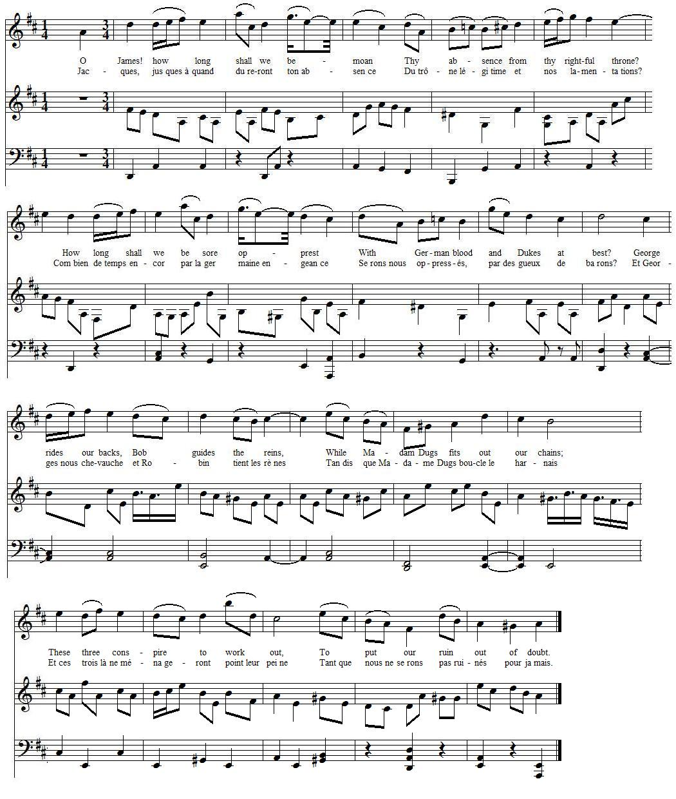
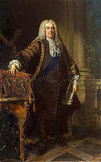

An Anthem to the 10th June 1735
Hymne pour le 10 juin 1735
from "The True Loyalist", 1779, page 101
Tune - Mélodie"Delia or the Amourous Goddess"
by Samuel Howard (1710 - 1782)
Sequenced by Christian Souchon
|
To the tune:
'DELIA, OR THE AMOROUS GODDESS' is an English country dance composed by Samuel Howard (1710-1782), a chorister of the Chapel Royal and organist at two London churches. He composed an opera, The Amorous Goddess , in 1744, in which the song “Delia” appears, beginning: “Delia, in whose form we trace…” - London publisher I. Walsh published the opera in 1744. - The song melody was also printed in John Simpson’s "Calliope, or English Harmon", vol. 2 (London, 1746), - John Sadler’s "The Muses Delight" (Liverpool, 1754), - John Johnson’s "Compleat Tutor for the Hautboy" (London, 1750), - his "Compleat Tutor for the German Flute" (London, 1760). Simpson gives “Mr. Howard” as the composer of the tune, and indicates it is “Mr. Howard’s Favorite Musette.” Source: Barnes (English Country Dance Tunes, vol. 2). 2005; pg. 29. via "The Fiddler's Companion" (cf. Links). However, since this tune was the vehicle for a song dated June 10th, 1735, we may infer that it was popular long before Samuel Howard used it in an opera. |
 |
A propos de la mélodie:
'DELIA OU LA DEESSE AMOUREUSE' est une contredanse anglaise composée par Samuel Howard (1710-1782), choriste de la Chapelle royale et organiste de deux églises de Londres. Il composa l'opéra La déesse amoureuse en 1744, dans lequel on trouve ce chant "Délia", qui commence ainsi: "Délia, dont la silhouette..." - L'éditeur londonien I. Walsh publia l'opéra en 1744. - La partition parut également dans le "Calliope ou l'Harmonie anglaise" de John Simpson, vol.2 (Londres, 1746), - dans le "Délice des Muses" de John Sadler (Liverpool, 1754), - dans le "Traité complet de hautbois" de John Johnson (Londres, 1750), - ainsi que dans le "Traité complet de flute allemande" du même auteur (Londres 1760). Simpson donne "M. Howard" comme le compositeur de la mélodie et indique que ce dernier aimait l'entendre sur la musette (petite cornemuse)." Source: Barnes (English Country Dance Tunes, vol. 2). 2005; pg. 29. via "The Fiddler's Companion" (cf. Links). Toutefois, du fait qu'il sert de support à un chant composé pour le 10 juin 1735, on peut se demander si cet air n'était pas sur toutes les lèvres bien avant que Samuel Howard ne l'intègre à un opéra. |

|
AN ANTHEM - June 10th, 1735 [1]
To the Tune of DELIA 1. O J[ame]s! how long shall we bemoan Thy absence from thy rightful th[ro]ne? How long shall we be sore opprest With G[er]man blood and D[u]kes at best? [2] 2. G[eorg]e rides our backs, Bob guides the reins, While Madam Dugs fits out our chains; [3] These three conspire to work out, To put our ruin out of doubt. 3. How long shall sacred right be stain'd With perjury and be prophan'd With feign'd lips that pray on high, While inward thoughts give them the lie. [4] 4. The sacred use of oaths is gone And honesty is rooted down: Deists [5] and rakes our isles command, And loyalists with scorn they brand. 5. Kind Heav'ns! look down upon our times, And free us from those hellish crimes: Restore our rightful injur'd K[in]g, And pull away the German thing. 6.Then justice would live in our isles Despising all the w[hig]gish wiles: Faction should cease and fiery rage O then we' have a golden age! [6] Source: "'The True Loyalist' or 'Chevalier's Favourite': being a collection of elegant songs, never before printed. Also several other loyal compositions, wrote by eminent hands." Printed in the year 1779. Page 101 |
 Robert Walpole (1676 - 1745) |
HYMNE pour le 10 juin 1735 [1]
sur l'air de DELIA. 1. Jacques, jusques à quand dureront ton absence Du trône légitime et nos lamentations? Combien de temps encor par la germaine engeance Serons nous oppressés, par ces gueux de barons? [2] 2. Et Georges nous chevauche et Robin tient les rênes. Madame Dugs est là pour boucler le harnais.[3] Et ces trois-là ne ménageront point leur peine Tant que nous ne serons pas ruinés à jamais. 3. Combien de temps encor des lèvres mensongères Et parjures insulteront-elles tes droits, Qui feignent vers le ciel d'élever des prières Qu'on récuse en se tenant sur son quant à soi? [4] 4. Il a vécu le temps des promesses sacrées. On a déraciné le chêne de l'honneur. Déistes [5] et roués règlent nos destinées Et la loyauté sert de cible à ces railleurs. 5. Ciel juste, jette donc les yeux sur notre époque Et libère-nous de ces crimes odieux! Restaure le vrai roi dont ces méchants se moquent Et renvoie le monstre germain vers d'autres cieux. 6. Alors Astrée voudra demeurer en nos îles, Dédaigneuse des Whigs et de leurs vils efforts Finies les factions et les rages débiles. Amis, nous verrons poindre un nouvel âge d'or! [6] (Trad. Christian Souchon (c) 2011) |
|
[1]
10th of June 1735
:
47th birthday
of the Chevalier de Saint George (James VIII).
[2] Dukes : George II was Duke of Brunswick-Lüneburg till October 1692 (then Prince of Hanover and Electoral Prince of Hanover in 1698) [3] George, Bob, Madam Dugs : King George II, Robert(Bob) Walpole who was dominant in the British government, with his Whig party, from 1721 till 1742, not least because he was a friend of Queen Caroline 's ("Madam Dugs". I did not find anywhere else this offensive nickname mentioned.). [4] Perjury : The Act of Abjuration passed by the parliament of King William, in 1701. [5] Deists : Adepts of a philosophy of religion where belief in God is based on reason and observation of nature. They flourished during the Age of Enlightenment (18th century) in Britain and France. They rejected religious authority and holy books. Though they were (like here) mistaken for atheists, they also rejected atheism. If the best known Deist is Voltaire, Burns might have been a Deist, too: See notes to Ye Jacobites by name in fine. [6] Golden age : The idea that the reign of a good king is accompanied by wealth and agricultural prosperity is an old cliché especially in Gaelic literature: see Rob Donn McKay's Song to the Prince , John McLachlan's Song on the Birth of Prince Charles , Alexander McDonald's Song composed in 1746 (verses 2 and 3), Would you see three nations bubbled , The accomplished Hero , An Ode , etc. |
[1]
10 juin 1735
:
47ème anniversaire
du Chevalier de Saint Georges (Jacques VIII).
[2] Barons : Georges II fut Duc de Brunswick-Lunebourg jusqu'en octobre 1692 (puis Prince de Hanovre et Prince électeur de Hanovre en 1698) [3] Georges, Robin, Madame Dugs : Le roi Georges II, Robert(Bob) Walpole qui domina le gouvernement britannique, avec son parti Whig de 1721 à 1742, entre autre, parce qu'il était l'ami de la Reine Caroline ("Madame Pis-de-vache": ce surnom grossier n'est cité nulle part ailleurs.). [4] Parjure : L' Acte d'Abjuration adopté par le parlement sous Guillaume III, en 1701. [5] Déistes : Adeptes d'une philosophie de la religion où la foi se fonde sur le raisonnement et l'observation de la nature. Ils eurent leur heure de gloire au 18ème siècle, à l'Ere des Lumières, en Grande Bretagne et en France. Ils rejetaient les autorités religieuses et les livres saints. Bien qu'on les ait parfois traités d'athées (comme ici), ils rejetaient aussi l'athéisme. Si le Déiste le plus fameux est Voltaire, Robert Burns peut avoir été l'un d'entre eux: Cf. notes à propos de Vous qu'on nomme les Jacobites in fine. [6] Âge d'or : L'idée que le règne d'un bon roi s'accompagne de richesses et d'une agriculture florissante est un vieux cliché, particulièrement de la littérature gaélique: cf. Rob Donn McKay Chant pour le Prince , John McLachlan La naissance du Prince Charles , Alexander McDonald's Chant composé en 1746 (couplets 2 and 3), Anonyme, Voyez trois nations qu'égare , Le héros accompli , An Ode , etc. |
|
|
|
|
Robert Walpole
(1676 - 1745)
Is generally regarded as the first Prime Minister of Great Britain , due to his influence within the cabinet. A zealous member of the Whig Party, he was first elected in 1701 and served during the reigns of George I and George II. In 1721 he obtained the post of First Lord of the Treasury and as from 1730, on the retirement of Lord Townshend, he became the sole leader of the Cabinet. He continued to govern until his resignation in 1742, making his administration the longest in British history . In 1720, Walpole was in the Cabinet when Britain was swept by a wave of speculation which led to the South Sea Bubble . Many, including Walpole himself, frenziedly invested in the company. By the latter part of 1720, the company began to collapse and the price of its shares to plunge. Walpole was saved from ruin, having been earlier advised to sell his shares. A committee investigated the scandal, finding that there was corruption on the part of many in the Cabinet. In particular Lord Stanhope and Lord Sunderland, the heads of the relevant Ministries. For his role in preventing them and others from being punished, Walpole gained the nickname of "Screenmaster-General". Under George I, Walpole's premiership was marked by the exposure of a Jacobite plot formed by the Bishop of Rochester. Whilst the political power of the monarch was gradually diminishing, that of his ministers gradually increased. Walpole, appointed in 1721 First Lord of the Treasury, Chancellor of the Exchequer and Leader of the House of Commons and his brother-in-law Lord Townshend were clearly the supreme forces in the ministry. They helped keep Great Britain at peace, especially by negotiating a treaty with France and Prussia in 1725 . Great Britain, free from Jacobite threats, from war, and from financial crises, grew prosperous, and Robert Walpole acquired the favour of George I. In 1727 when George I died and was succeeded by George II, the new King agreed to keep Walpole and Townshend in office upon the advice of their close friend, Queen Caroline . The two clashed over foreign policy regarding Austria. Townshend retired in May 1730 and Walpole was able to conclude the Treaty of Vienna creating the Anglo-Austrian alliance . He had many opponents, the most important of whom were the Tory Lord Bolingbroke and the Ex-Whig William Pulteney . He was also satirised and parodied, for example by John Gay in his farcical Beggar's Opera , Jonathan Swift, Alexander Pope and Samuel Johnson. However, Walpole secured the support of the House of Commons by avoiding war which, in turn, allowed him to impose low taxes. In 1733, his influence was seriously threatened by a taxation scheme he introduced, to the effect that the tariff on wine and tobacco should be replaced by an excise tax to be collected not at ports but at warehouses. This proposal was extremely unpopular among the nation's merchants and Walpole agreed to withdraw the bill. In 1736 his popularity continued to wane when an increase in the tax on gin inspired riots in London. The year 1737 was marked by the death of Queen Caroline and Walpole's domination of government continued to decline. His opponents found a leader in the Prince of Wales who was estranged from his father, the King. Several young politicians including William Pitt the Elder joined the Prince of Wales in opposition. Walpole's failure to maintain a policy of avoiding military conflict eventually led to his fall from power. Disputes with Spain, broke out over trade with the West Indies. Walpole attempted to prevent war but was opposed by the King and the House of Commons. In 1739 he abandoned all efforts to stop the conflict and commenced the War of Jenkins' Ear . In the 1741 general elections returned an increased number of Members of Parliament hostile to the Prime Minister, or whose loyaly was uncertain. In 1742 the news of the naval disaster against Spain in the Battle of Cartagena de Indias prompted the end of his political career. On 11 February 1742, Walpole formally relinquished the seals of office. Walpole relied primarily on the favour of the King rather than on the support of the House of Commons. His Tory opponents shared the point of view of the king of Prussia who said: "Walpole had captivated his majesty by the savings which he made out of the civil list, from which George filled his Hanoverian treasury!", whereas the Whig statesman Edmund Burke wrote that " The charge of systematic corruption is less applicable to him, perhaps, than to any minister who ever served the crown for so great a length of time." (When he resigned in 1742, Walpole had derived for himself £ 1,453,400 from his post in ten years!) Another Whig politician defines him perhaps more accurately: " "Money, not prerogative, was the chief engine of his administration, and he employed it with a success that in a manner disgraced humanity...He was more dangerous to the morals, than to the libertys of his country." The charge of corruption appears in a great many Jacobite songs: German Cannibal , verses 6/7, Rebellious Crew , verse 2, Pilfering Brood , verse 3, Beautiful Britannia , verse 2, etc. |
Robert Walpole
(1676 - 1745)
Est généralement considéré comme le premier Premier ministre de Grande Bretagne en raison de son rôle au sein du cabinet. Membre actif du parti Whig, il fut élu pour la première fois en 1701 et servit sous les règnes de Georges I et Georges II. En 1721, il devint Premier Lord du Trésor et, à compter de 1730, au départ de Lord Townshend, c'était lui le seul chef du Cabinet. Il continua de gouverner jusqu'à sa démission en 1742 ce qui fit de son mandat le plus long de l'histoire anglaise. En 1720, Walpole faisait partie du Cabinet, lorsque l'Angleterre fut balayée par une vague de spéculation, l'affaire de la Mer du Sud . Nombreux étaient ceux qui, comme Walpole lui-même, avaient frénétiquement investi dans cette compagnie qui, la fin de 1720, commença à battre de l'aile, voyant le cours de son action plonger. Walpole, averti à temps, parvint à sauver sa mise. Un comité chargé d'enquêter sur ce scandale conclut à la corruption de plusieurs membres du Cabinet. En particulier Lord Stanhope et Lord Sunderland qui étaient à la tête des ministères concernés. Pour leur avoir évité des sanctions, à eux et quelques autres, Walpole fut baptisé le "Paravent général". Sous Georges I, le gouvernement de Walpole fut marqué par la découverte du complot Jacobite de l'évêque de Rochester. Le pouvoir du monarque se réduisait tandis que s'accroissait celui de ses ministres. Walpole, nommé en 1721, Premier Lord du Trésor, Chancelier de l'Echiquier, et Chef de la Chambre des Communes, et son beau-frère Lord Townshend, étaient devenus, à l'évidence, les maîtres du gouvernement. Ils permirent à la Grande Bretagne d'éviter les guerres en négociant, en particulier, un traité avec la France et la Prusse en 1725 . Leur pays, débarrassé des menées Jacobites, des guerres et des crises financières, devint prospère et Robert Walpole gagna la faveur de George I. En 1727, lorsque George I mourut et que George II lui succéda, le nouveau roi accepta de conserver Walpole et Townsend, suivant en cela l'avis de leur amie, la reine Caroline . Les deux hommes tombèrent en désaccord au sujet de l'Autriche. Townshend se retira en mai 1730 et Walpole eut les mains libres pour conclure le traité de Vienne qui scellait l'Alliance Anglo-autrichienne . Il eut beaucoup d'opposants, en particulier le Tory Lord Bolingbroke et l'Ex-Whig William Pulteney . Il fut aussi la cible de satires et de parodies telles que l'Opéra du Gueux de John Gay et les écrits de Jonathan Swift, Alexander Pope and Samuel Johnson. Mais Walpole s'assurait le soutien de la Chambre des Communes en évitant les guerres, ce qui lui permettait de baisser les impôts. En 1733 son influence fut menacée par sa proposition visant à remplacer les taxes sur les vins et tabacs par un droit d'accise perçu, non pas dans les ports, mais dans les entrepôts. Ce projet fut fort mal accueilli par les commerçants et Walpole accepta de le retirer. En 1736 sa popularité continua de décliner, quand une augmentation des droits sur le gin provoqua des émeutes à Londres. L'année 1737 fut marquée par la mort de la Reine Caroline qui diminua encore l'emprise de Walpole sur le gouvernement. Ses opposants trouvèrent un chef en la personne du Prince de Galles qui était brouillé avec son père le roi. Plusieurs jeunes politiciens, dont William Pitt l'Ancien se rangèrent à cette opposition. L'impossibilité dans laquelle il se trouva d'éviter les conflits armés entraîna sa chute, au bout du compte. Un différend se fit jour avec l'Espagne au sujet du commerce aux Antilles. Walpole s'efforça d'empêcher une guerre contre l'avis du roi et des Communes. En 1739 il abandonna tout effort d'empêcher le conflit et ce fut le début de la Guerre de l'oreille de Jenkin . Les élections de 1741 augmentèrent encore le nombre de députés hostiles au premier ministre, ou de loyauté chancelante. En 1742, la nouvelle d'une défaite navale face à l'Espagne à la bataille de Carthagène des Indes mit fin à sa carrière politique. Le 11 février 1742, Walpole démissionna de toutes ses fonctions. Walpole s'appuyait, par principe, plus sur la faveur du roi que sur le soutien de la Chambre des Communes. Ses opposant tories partageaient le point de vue du roi de Prusse qui disait: "Walpole tenait sa Majesté par les économies qu'il lui faisait faire sur sa liste civile, grâce à quoi George alimentait le trésor de Hanovre!". Quant à l'homme d'état Whig, Edmond Burke, il écrivait: "L'accusation de corruption systématique s'appliquait peut-être moins à lui qu'à un autre ministre, eu égard à la durée de sa charge." (Quand il démissionna en 1742, Walpole avait perçu à titre personnel 1.453.400 £ du fait de ses fonctions en 10 ans!) Un autre politicien Whig s'exprime d'une façon sans doute moins sibylline: "C'était l'argent, et non les prérogatives de sa charge, qui était le moteur principal de son administration. Il l'utilisait avec une efficacité qui ne fait pas honneur à la nature humaine. Il attenta plus au moral qu'aux libertés de son pays." Cette accusation de corruption est présente dans un grand nombre de chants Jacobites: Cannibale allemand , couplets 6/7, La bande de rebelles , couplet 2, Les chapardeurs , couplet 3, Belle Britannia , couplet 2, etc. |